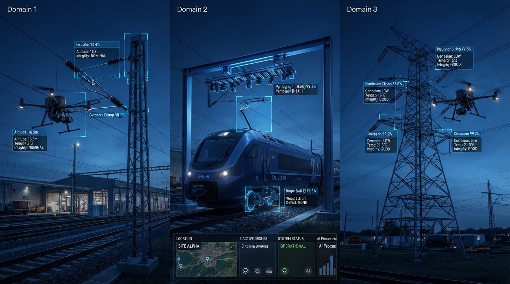

AI Applied to Real-World Inspection
From railway infrastructure to rolling stock and power-grid assets, AI and computer vision can help transform visual inspection into structured digital intelligence.

Rail OHE Catenary • Rolling Stock Assemblies • Transmission Grid
Selected Technology Projects
Examples of how artificial intelligence, computer vision and automated inspection can be applied to complex physical environments.
OHE Inspection
Automated image segmentation and feature recognition across catenary wires, droppers, and support hardware captured via aerial autonomous flight passes.
Rolling Stock Inspection
High-speed cameras capture images of rolling stock as it passes through an inspection environment, and computer vision analyzes the captured imagery.
Power Grid Inspection
Drone-captured imagery of power transmission towers and their components, reviewed with computer vision.
OHE — AI-Powered Overhead Equipment Inspection
An AI-powered railway inspection workflow designed to analyze overhead equipment imagery and identify relevant components and visual conditions.
Scale & Structural Heterogeneity
Railway overhead equipment contains multiple components that need to be inspected across large physical environments. Manual inspection and visual review can be time-consuming and difficult to organize consistently.
Designed to augment existing enterprise rail asset management by categorizing visual inspection feeds for qualified engineering personnel.
The Technology Approach Workflow
Flight paths programmed parallel to catenary masts.
Dual optic synchronized multi-spectrum capture.
Convolutional & visual transformer model passes.
Localization of distinct mechanical assemblies.
Classification of surface state and geometry.
Spatial provenance metadata bound to imagery.
Understanding OHE Components
Modular computer vision models are parameterized to recognize designated component categories within diverse electrification geometry.
Multiple Visual Perspectives (RGB + Thermal)
RGB imagery provides visual information for component inspection, while thermal imagery provides an additional inspection modality for applications where thermal information is relevant.
From Image to Inspection Finding
The inspection workflow is designed to connect AI findings with image evidence, location metadata and structured reporting.
Rolling Stock — High-Speed Vision Inspection
High-speed cameras are used to capture images of railway rolling stock as it passes through an inspection environment. Computer vision can then analyze the captured imagery to identify components and potential visual faults.
The Inspection Challenge
Railway rolling stock contains many components that need to be inspected. Capturing and analyzing large volumes of imagery requires a consistent and scalable visual inspection approach.
Designed to highlight images for engineer review. People make the decisions.
High-Speed Visual Inspection Workflow
Train passes calibrated lineside track portal.
Multiview strobe illumination capture sequence.
Image preprocessing and component localization.
Computer vision can analyze captured images to identify relevant components and visual conditions, helping organize inspection information for further review.
Power Grid — Drone-Based Infrastructure Inspection
Drones can capture high-resolution imagery of power transmission towers and their components, allowing computer vision to assist with visual inspection.
Remote & Inaccessible Terrain
Power transmission infrastructure covers large and difficult-to-access environments. Drone-based imagery can provide a practical way to capture visual information for inspection and analysis.
Intended to support field teams with pre-screened imagery, not to replace on-site inspection.
Technology Workflow
Drone image capture of transmission towers and their components.
Classification across lattice framework and line hardware.
Flagging potential surface anomalies and wear traces.
Audit-ready visual log indexed by tower ID and coordinates.
Target Hardware Components
Tower Structure
Lattice steel cross-bracing, legs, and foundation gussets.
Insulators
Cap-and-pin glass, porcelain disks, and composite strings.
Conductors
Phase bundle strands, optical ground wire (OPGW), and jumpers.
Clamps
Suspension clamps, tension strain assemblies, and spacers.
Hardware
Shackles, cotter pins, damper weights, and corona rings.
One AI Foundation. Different Inspection Environments.
The environment changes. The technology adapts to the inspection problem.
Inspection Technology Ecosystem
Conceptual Workflow Architecture
Drone UAV, High-Speed Lineside Camera
RGB and thermal imagery
Computer Vision, Deep Learning Models
Component Detection, Visual Analysis
Contextualized Inspection Finding
Source Image, GPS Location, Timestamp
Structured Inspection Export & API Integration
What These Projects Demonstrate
Key operational learnings from deployed computational vision models across industrial operations.
Visual Intelligence
AI can help analyze large volumes of visual information that would otherwise saturate manual review bandwidth.
Multi-Environment
Computer vision can be adapted to different physical inspection environments without changing underlying inference logic.
Structured Evidence
Inspection findings can be systematically connected to original raw images and recorded geospatial metadata.
Technology Integration
AI functions most reliably as part of a broader inspection workflow rather than as an isolated, standalone black-box model.
From Images to Operational Intelligence
The opportunity is not only to detect objects. It is to connect visual information, AI analysis, location and evidence into a structured inspection workflow.
Have an Inspection Challenge?
If your organization relies on visual inspection, let's explore how AI and computer vision could support the workflow.